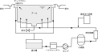

2022年
問題139 特殊設備に関連する次の記述のうち，最も不適当なものはどれか．
（1）厨房機器が具備すべき要件として，食品に接する部分は，衛生的で，容易に洗浄・殺菌ができる構造とする．
（2）入浴設備の打たせ湯には，循環している浴槽水を用いない．
（3）水景施設への上水系統からの補給水は，必ず，吐水口空間を設けて間接的に給水する．
（4）プールの循環ろ過にオーバフロー方式を採用する場合には，オーバフローに床の洗浄水が入らない構造とする．
（5）入浴設備で浴槽からの循環水を消毒する場合は，消毒に用いる塩素系薬剤の投入口をろ過器から出た直後に設置する．
2022年
問題139 正解（5） 頻出度AAA
『ろ過器を設置している浴槽では，浴槽水の消毒に用いる塩素系薬剤の注入口又は投入口は，浴槽水がろ過器に入る直前に設置し，ろ過器内の生物膜の生成を抑制すること．』（厚労省告示：レジオネラ症を予防するために必要な措置に関する技術上の指針）．2022-139-1図参照．
2022-139-1図 浴槽の循環ろ過（オーバフロー方式）

出典 公益財団法人 日本建築衛生管理教育センター
「新建築物の環境衛生管理第1版第1刷」中巻551頁 図6-11-3(1) を基に作成
各種給排水設備のうち，ちゅう房設備，洗濯設備，プール設備，浴場設備，水景設備，ごみ処理設備，真空掃除設備，医療配管などを特殊設備という．
-(4) プールの循環ろ過オーバフロー方式2022-139-2図参照．
2022-139-2図 プールの循環ろ過オーバフロー方式

出典 公益財団法人 日本建築衛生管理教育センター
新建築物の環境衛生管理H31.3.31第1版第1刷 中550 図6-11-2⑴